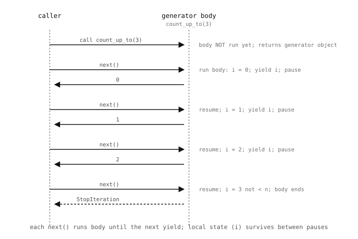
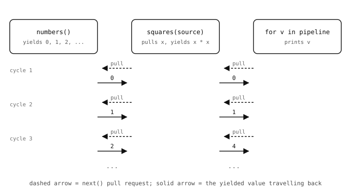

2.31. Iterators และ generators¶
for loop ทำงานหนักกว่าที่เห็น หน้านี้ครอบคลุม iterator protocol ที่มันทำงานอยู่ และคีย์เวิร์ด yield ที่ให้คุณสร้าง iterator ของตัวเอง
2.31.1. Iterator protocol¶
ทุกออบเจกต์ที่สามารถวนซ้ำได้ต้องใช้งานสองเมธอด:
__iter__()-- คืนค่า iterator ของรายการในออบเจกต์__next__()-- บน iterator, คืนค่ารายการถัดไปหรือ raiseStopIterationเมื่อไม่มีรายการเหลือแล้ว
built-in iter() เรียก __iter__; next() เรียก __next__ ลองทำงานผ่านรายการด้วยตนเอง:
it = iter([10, 20, 30])
print(next(it)) # 10
print(next(it)) # 20
print(next(it)) # 30
print(next(it)) # raises StopIteration

for คือ syntax sugar ของ "เรียก __iter__ ครั้งเดียว จากนั้นวนซ้ำบน __next__ จนถึง StopIteration"¶
สิ่งที่ for x in items: ทำจริงๆ:
_it = iter(items)
while True:
try:
x = next(_it)
except StopIteration:
break
# ... loop body ...
ทุก list, tuple, string, dict, set, file object และเจนเนอเรเตอร์ใช้งาน __iter__ และ __next__ อยู่แล้ว ดังนั้นจึงทำงานกับ for ได้ทั้งหมด
2.31.2. ฟังก์ชัน yield และ generator¶
ฟังก์ชันที่มีคำสั่ง yield คือ generator function การเรียกใช้มันจะไม่รันตัวฟังก์ชัน แต่คืนค่า generator object (ซึ่งเป็น iterator) ที่รันตัวฟังก์ชันทีละ yield:
def count_up_to(n):
i = 0
while i < n:
yield i
i += 1
for value in count_up_to(3):
print(value)
Output:
0
1
2
การเรียก next() แต่ละครั้งจะกลับมาทำงานต่อในฟังก์ชันจนถึง yield ถัดไป ส่งค่านั้นให้ผู้เรียก และหยุดชั่วคราวตรงนั้น สถานะโลคอล (ในกรณีนี้คือ i) จะถูกเก็บรักษาระหว่างการกลับมาทำงาน

next() รันตัวฟังก์ชันจนถึง yield ถัดไป ส่งค่ากลับ และหยุดชั่วคราว สถานะโลคอลจะรอดพ้นจากการหยุดชั่วคราว¶
เจนเนอเรเตอร์คือวิธีที่ง่ายที่สุดในการสร้างลำดับแบบ lazy ไม่มีการสร้าง list ขึ้นมา รายการจะถูกคำนวณเฉพาะเมื่อผู้ใช้งานต้องการ และฟังก์ชันสามารถ yield รายการไปเรื่อยๆ ได้ตลอดไปหากต้องการ
2.31.3. Pipeline แบบ lazy¶
เจนเนอเรเตอร์ประกอบกันได้ดี output ของเจนเนอเรเตอร์หนึ่งสามารถป้อนให้กับอีกอันได้:
def numbers():
i = 0
while True:
yield i
i += 1
def squares(source):
for x in source:
yield x * x
pipeline = squares(numbers())
for v in pipeline:
if v > 100:
break
print(v)
ค่าจะไหลผ่าน pipeline ทีละค่า ไม่มี list กลางๆ ไม่มีขอบเขตบนที่ฝังอยู่ใน numbers และผู้ใช้งาน (for v in pipeline) เป็นผู้ตัดสินใจเมื่อต้องการหยุด

next() แต่ละครั้งบน consumer จะทริกเกอร์การดึงหนึ่งครั้งตลอดเชน ค่าจะมีอยู่เฉพาะเมื่อมีบางอย่างถามหา¶
2.31.3.1. yield from¶
การวนซ้ำที่ดึงรายการจาก iterable อื่นและ yield แต่ละรายการเป็นเรื่องที่พบบ่อยพอที่ Python จัดเตรียม shortcut ไว้ นิพจน์ yield from iter จะ yield ค่าแต่ละค่าที่ iterable สร้าง ตามลำดับ เสมือนว่าเจนเนอเรเตอร์มีลูป for x in iter: yield x อยู่ inline:
def chain(*sources):
for source in sources:
yield from source
for v in chain([1, 2, 3], (4, 5), "abc"):
print(v)
Output:
1
2
3
4
5
a
b
c
yield from เทียบเท่ากับลูป for ที่เขียนชัดเจนทุกประการ แต่สั้นกว่า และมันจัดการ StopIteration จาก iterable ภายในขึ้นไปยังเจนเนอเรเตอร์ภายนอกอย่างสะอาด ซึ่งมีประโยชน์เมื่อต่อเจนเนอเรเตอร์หลายๆ อันเรียงกัน
2.31.3.2. เมื่อ yield หมด¶
การตกออกจากปลาย generator function (หรือพบ return โดยชัดเจน) จะ raise StopIteration โดยอัตโนมัติ ไม่จำเป็นต้อง raise มันด้วยมือ ลูป for ที่ล้อมรอบจะเห็นมันและสิ้นสุดลง
ใช้เจนเนอเรเตอร์เมื่อโค้ดที่สร้างข้อมูลเขียนได้เป็นธรรมชาติเป็นลูปที่มีจุด yield บ้าง ใช้ list comprehension ธรรมดาเมื่อคุณต้องการลำดับทั้งหมดในหน่วยความจำจริงๆ